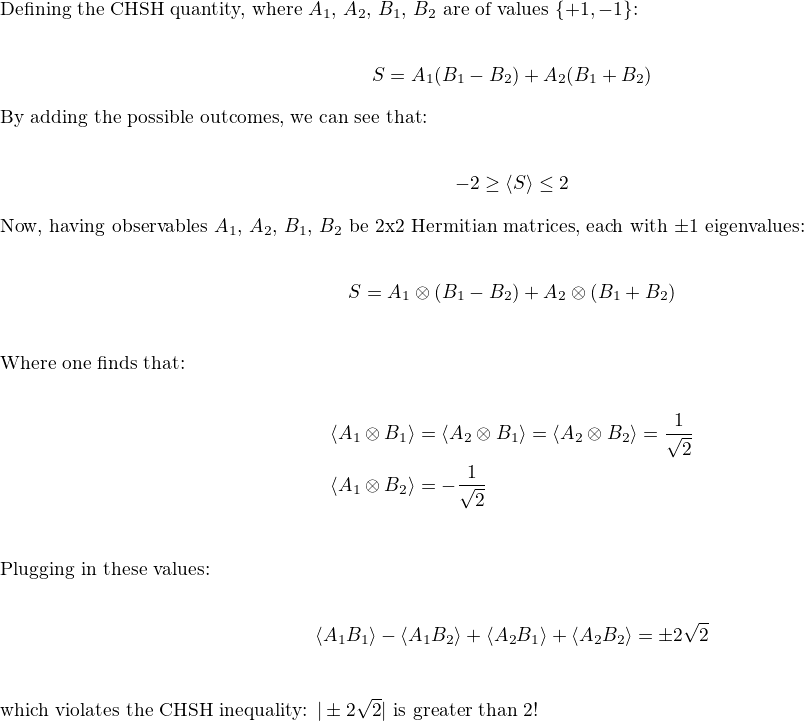
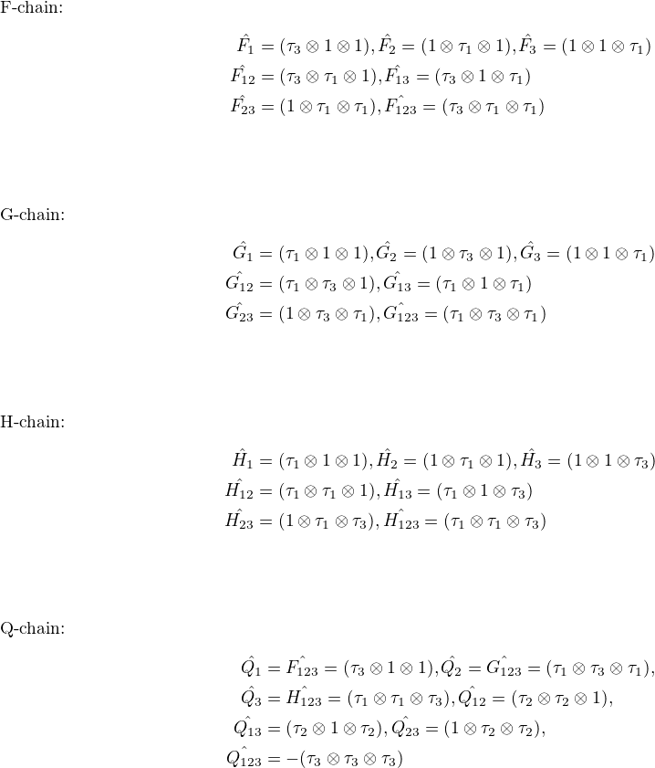
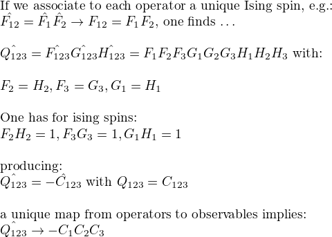
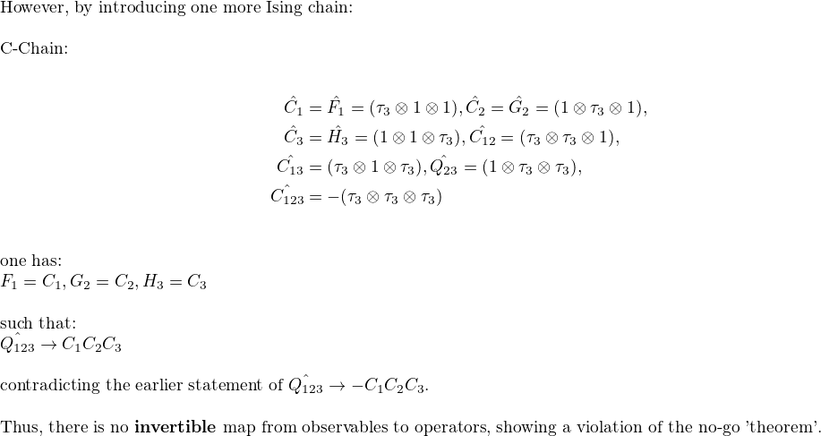
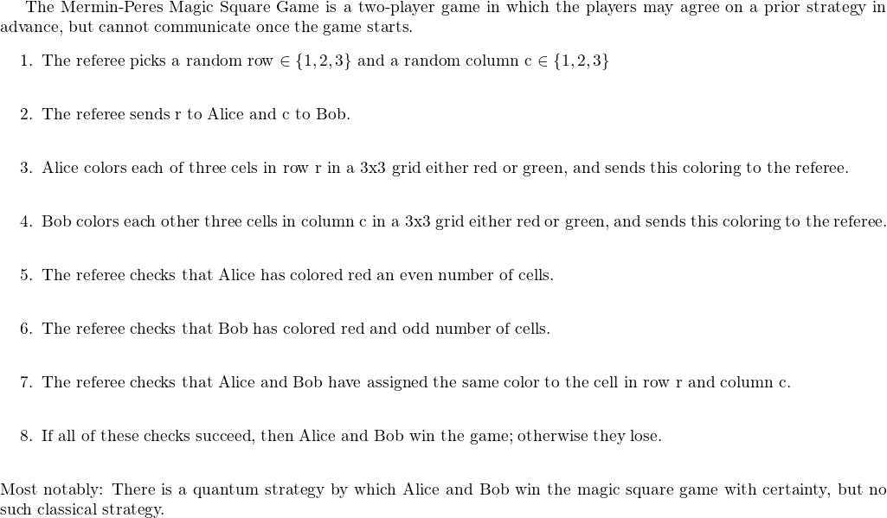
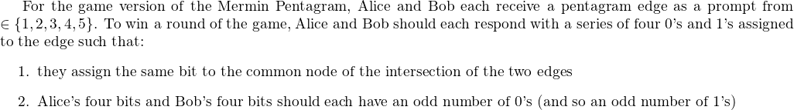
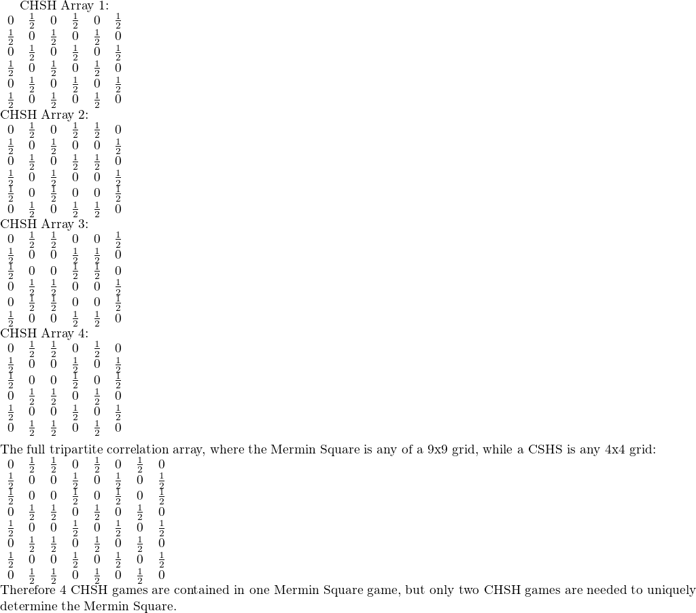

Table of Contents
1. Table of Contents:
- Introduction
- CHSH and Mermin Square
- KCBS and Mermin Pentagram
- Relating the two
- Conclusion
2. Introduction
The goal of this blog post is to provide an introduction to a few geometric quantum objects, demonstrate the ways in which they are analyzed and used, and elaborate on a relationship between them. The CHSH inequality’s expectation values are defined explicitly to show nonlocality. The KCBS Pentagram and it’s Kochen Specker act as a proof on demonstrating the no-go theorem. The Mermin Peres Magic Square Game and the Mermin Pentagram are briefly mentioned in explaining Hidden Variable theories, described through its connections with the previous three objects. This blog post is part 1 of 3 of a series describing the underpinnings of how the Mermin Square and Mermin Pentagram are related through the group M24. For this blog post I will only establish the objects at hand and the relationships between them.
3. CHSH and KCBS Pentagram kcbs chsh
3.1. CHSH chsh
The CHSH inequality is used to perform a Bell test, showing that the behaviour of entangled quantum systems is incompatible with local hidden variables, or that quantum mechanics really is random. Here we look at how expectation values differ when considering a classical versus quantum system, and that classical values can be exceeded with the use of quantum entanglement.

The CHSH is used as a signature of quantum nonlocality, whenever the expectation value exceeds 2 for a bipartite system, there is quantum entanglement across different objects at hand. In fact, the maximum expectation quantum value for a bipartite system, known as the Tsierlion Bound, is the quantum expectation value given by the CHSH experiment.
3.2. KCBS Pentagram kcbs
The KCBS Pentagram is defined on a pentagon (or on the outer points of a pentagram) containing a 3 qubit pauli spin gate observable at each vetex. Here I describe a Kochen Specker configuration of the KCBS pentagram: it’s goal is to show that quantum mechanics is inherently contextual; that is that one can not reliably describe measurement outcomes by their operator, or that one must choose a common basis of operators (context) of which to describe quantum theory. For the Kochen Specker example of the KCBS Pentagram, each co-measureable spin from a chain represents one of the vertices of the pentagon. The full set of co-measurable spins from each chain is necessary to demonstate the existence (or lack thereof) of a Hidden Variable model independent of a chosen basis.



4. Mermin Square and Mermin Pentagram mermin_square mermin_pentagram
There is much to explore about the Mermin Square and Mermin Pentagram – for now I will briefly mention them for the first blog – they will become vital later.
4.1. Mermin Square mermin_square

4.2. Mermin Pentagram mermin_pentagram
The Mermin Pentagram has ten 3 Qubit Pauli Spin Gate Observables aranged in a Pentagram shape such that 4 Observables are on each edge. The Mermin Pentagram was used to demonstrate a violation of the no-go theorem.

Like the other examples, the Mermin Pentagram has no classical strategy with a 100% success rate, but by sharing a qubit state, there is a guaranteed quantum strategy to win.
5. Relating the two
5.1. Correlation Arrays describing Mermin Square and CHSH
Correlation Arrays are used to describe how the statistics of multipartite systems are entangled through correlation polytopes. An interesting pattern emerges when one views the different correlation arrays of the CHSH game from a bipartite to tripartite setting: the CHSH correlation arrays are contained within the Mermin Square!

The same is also true for the KCBS and Mermin Pentagram, where two KCBS are needed to uniquely determine the Mermin Pentagram contained. These coincidences were not enough proof for me of a definitive connection, but it was enough to convince me that a deeper relationship could exist, perhaps a monogamy of these games…
5.2. Monogamy Relationships
By turning to graph theory, as shown in [1], one is able to see how each quantum game is represented in graph form. Here, the top graph, referred to as K3,3, represents the Mermin Peres Magic Square. It can be vetex decomposed in 4 different ways (simililiarly to the 4 CHSH correlation arrays found in one Mermin Square), such that it creates two subgraphs, representing the CHSH system.

The same is also true for the Mermin Pentagram. It is more obvious to see how two pentagons, the KCBS Pentagram, can be found around the Pentagram, which is referred to as K5, represinging the Mermin Pentagram. It can also be any path given by 5 edges, of which there are 7 more unique versions.

Moreover, there is a monogomy relationship between the KCBS Pentagram / CHSH and the Mermin Pentagram / Mermin Square, such that Alice and Bob of the Mermin Square / Mermin Pentagram each play different versions of the CHSH system / KCBS Pentagram together, where the outcome helps decide what moves to play to successfully win at the Mermin square / Mermin Pentagram. This makes sense as the CHSH system / KCBS pentagram is commonly represented in a GHZ / Werner state, which is the entangled state shared in the Mermin Square / Mermin Pentagram. The monogamy relationship says that two separate CHSH system / KCBS pentagram games can be represented as a single GHZ / Werner state to give enough information as to tell what Mermin Square / Mermin Pentagram configuration one has. Thus, while the Mermin Peres Magic Square and Mermin Pentagram are more complicated than the CHSH system and KCBS pentagram, we can work with these simpler models and see how they can apply to expand our knowledge of the complicated problems.
6. Conclusion
This blog is my first attempt at getting things out of my head… I hope that by introducing these quantum objects, it is shown that these models have more than meets the eye, and that our very understanding of the principles governing quantum mechanics, nonlocality, contextuality, etc., rely on us underpinning the inner mechanisms governing them. I leave off with one last idea: relating the CSHS through the KCBS [2], such that the KCBS Pentagram contextuality measured through concurrence is algebraically related to the measure of nonlocality of the CHSH system. This would allow one to represent the outcome statistics of the CHSH game purely through a function of the states chosen of the KCBS Pentagram game! This even means that even the Mermin Pentagram Werner state held is enough to represent the GHZ state and win the Mermin Square game being played… if there was a hidden variable model describing both of them. As we have seen through the KCBS Pentagram and CHSH system, there is not… unless one is to modify the games to rely on sequential measurements instead of simultaneous measurements. But thats for the next blog. Until then - Ryan.
7. Next Up
- Wreath products and how the Mermin Square and Mermin Pentagram relate to M24
- 24-24 Mermin-Cabello system of converting nonlocality and contextuality
- Introduce quantum codes
- Explain supper-symmetry